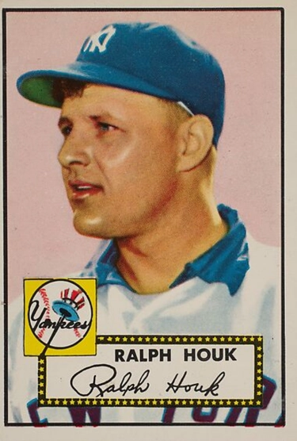

Ralph Houk "The Major"
Career Highlights & Facts
(Facts are AI-generated and may require verification)
- Awarded a Silver Star, Bronze Star, and Purple Heart for military service during a major global conflict.
- Managed a team to championships in each of the first 2 seasons at the helm.
- Served as a backup catcher who famously challenged an umpire after a controversial tag play at home plate.
Would you like to find out more about Ralph Houk?
Read Player Biography
Ralph Houk
January 4, 2012
/
in
BioProject - Person
Managers
1947 New York Yankees
/
by
admin
This article was written by
John Vorperian
Ralph Houk was the first manager to have two World Series championships in his first two seasons, piloting the 1961 and 1962 New York Yankees to triumphs over the Cincinnati Reds and San Francisco Giants. His Yankees won a third consecutive pennant in 1963, but lost the World Series to the Los Angeles Dodgers.
A backup catcher throughout his playing career, Houk sought to build the morale and confidence of his players and seldom criticized them publicly. “I don’t think you can humiliate a player and expect him to perform,” he once said.1
Ralph George Houk was born on August 9, 1919, in Lawrence, Kansas. His father, George J. Houk, raised cattle and farmed 160 acres of land in Kanwaka, Kansas, about eight miles east of Lawrence. Ralph’s mother was Emma A. (Schael) Houk; he had two older brothers, Harold M. and Russell V., an older sister, Hazel, and a younger brother, Clifford.
Houk’s baseball education began at the tender age of eleven. His uncles Harvey, Albert, Rudy, and Charlie Houk played weekend baseball on a semipro club, the Belvoirs. Charlie, the manager, took Ralph to a tryout with the Lawrence Twilight League, a circuit sponsored by fraternal orders and small businesses for boys eleven to seventeen. Young Ralph, who had a sturdy frame and strong throwing arm, was selected by the Fraternal Order of Eagles and played left field his first season.
The following year, Houk filled in at catcher, became the regular, and found his niche in baseball. He later remarked, “I liked catching. I had the whole game in front of me. I was in on every pitch. At fifteen I was solid as a rock, 170 pounds of hard-muscled flesh. I could block onrushing base runners at home plate. In fact blocking was easy for me.”
Houk was also drawn to football. At Lawrence High, he played quarterback and defensive back. “I seldom passed from my post behind center,” he remembered.2 In the 1937 state title game against Emporia, Houk ran for three touchdowns, one for sixty-seven yards. He earned all-state honors, and the Universities of Kansas and Oklahoma, and several smaller colleges, offered him football scholarships. Yet as much as the teenager desired a college education, he wanted a career in baseball.
At sixteen, Houk moved up from the Eagles to the Belvoirs and also played for a Lawrence team in the Ban Johnson League, a regional circuit for teenagers. Houk later recalled that in 1938, he batted .411 as Lawrence raced into the league tournament at Kansas City, Kansas. He caught the first game of a tourney doubleheader, slugged three hits, threw out a base stealer, and twice blocked runners at the plate as Lawrence prevailed, 5–4.
Yankees scouts Bill Essick and Bill Skiff, who attended the game, later went into the clubhouse. While Skiff guarded the door to keep other scouts out, Essick signed the nineteen-year-old Houk to a contract with a $200 bonus.
In March 1939 Houk went to spring training with Joplin (Missouri) Miners of the Class C Western Association. Later in the season he was assigned to the Neosho (Missouri) Yankees in the Class D Arkansas-Missouri League. There, for a $75-a-month salary, he caught 109 games and batted .286 with 56 RBIs, playing well enough to be honored with a “day” at the Neosho ballpark.
Houk was promoted back to Joplin in 1940, but his contract called for the same $75 salary. Believing he should not be paid Class D wages in a Class C league, he sent a letter to the Yankees. When he got no response, Houk went to Joplin to plead his case with the manager, Red O’Malley, who offered him another $15. Houk accepted the $90-a-month salary and played in 110 games, batted .313, drove in sixty-three runs, and led the league’s catchers in assists.
Houk credited O’Malley, a former Pacific Coast League catcher, with improving his defensive skills and understanding of the game. Under O’Malley, he learned to position his fielders and memorize the batters’ habits. Most importantly, he made a habit of knowing his pitchers. He knew which hurlers had fortitude and who had fragile egos. “I knew their best pitches and their worst, and when to call for speed and when to use their slower stuff,” he said later.3
After opening the 1941 season with the Binghamton (New York) Triplets of the Class A Eastern League, Houk was demoted to the Augusta (Georgia) Tigers of the Class B South Atlantic League. There he batted .271 in ninety-seven games, and caught a no-hitter by future New York Yankees relief ace Joe Page.
In February 1942, both Ralph and his brother Harold joined the Army and were sent to Fort Leavenworth, Kansas. Twenty-two-year-old Ralph was made the manager of the camp baseball team. When the weather was too cold for baseball, he was placed in charge of a barracks for recruits. It was good experience for a future big-league manager.
“I learned fast how to keep all kinds of men in line, from weepy homesick boys to neurotics who pulled knives on each other,” he said.4 Ralph and Harold applied for Officer Candidate School, and were accepted. Ralph was sent to the armored warfare school at Fort Knox, Kentucky. Upon graduation, he was commissioned a second lieutenant, and in July 1944 was sent overseas with the 89th Cavalry Reconnaissance Squadron of the Ninth Armored Division.
A few days after D-Day Houk landed on Omaha Beach in Normandy where his helmet was pierced by a bullet that narrowly missed his skull. As the GIs pushed through Europe, Houk and his troops found themselves in the Ardennes Forest, where the Germans launched the counterattack we now call the Battle of the Bulge. “Suddenly all hell broke loose,” Houk wrote. “They opened the attack with a furious barrage; followed by wave after wave of Hitler’s battle-tested troopers . . . Panzer divisions . . . were turned loose on us.”5 His unit was pushed back to the town of Waldbillig. When two other lieutenants were killed, Houk was left as the senior officer. As the Germans pushed forward he found a tank destroyer, rode it back to Waldbillig and held the town.
Houk was awarded the Silver Star. Later he was given a battlefield promotion to first lieutenant, and just before the war’s end he was promoted to captain and was awarded a Bronze Star and Purple Heart. Before being discharged he was automatically lifted one grade to major, which accounted for his postwar nickname, “the Major.”
In 1946 the Yankees assigned the twenty-six-year-old Houk, four years removed from his last Minor League season, to the Class Triple-A Kansas City Blues. After eight games he was sent down to the Class Double-A Beaumont (Texas) Exporters. In eighty-seven games with Beaumont, he handled catching and outfield duties and batted .294 with ninety RBIs. Houk went to spring training with the Yankees in 1947, where he competed for the receiver position with veterans Aaron Robinson, Ken Silvestri, and Gus Niarhos and rookie Yogi Berra.
On an exhibition tour of Latin America, manager Bucky Harris started Houk in the opening game, in San Juan, Puerto Rico, because all the other catchers had sore arms. Houk had a good series in San Juan and started the opener in Caracas, Venezuela. The pitcher was a rookie left-hander who was wild. Several times coach Charlie Dressen directed Houk to go into a lower stance. At one point, the five-foot-eleven, 193-pound Houk called time, ran toward Dressen and said, “Where the hell do you want me to go? Under the plate?”6
Houk caught no more in Venezuela or the next stop, Havana. The exhibition tour over, Houk was sent from the Yankees’ main camp at St. Petersburg, Florida, to their Minor League camp in Bradenton. But when the Yankees headed north, he was with the team.
On April 26, 1947, Houk made his Major League debut in a 3–1 victory over the Washington Senators at Yankee Stadium. Catching fellow rookie Don Johnson, Houk batted in the eighth slot and went 3-for-3 with a double. Manager Harris, impressed with the performance, kept Houk as the team’s third-string catcher. He spent the season catching in the bullpen and subbing for Aaron Robinson or Yogi Berra in late innings of lopsided contests or second games of doubleheaders. Houk played in forty-one games, and batted .272. In his only World Series appearance that year, he had a pinch-hit single off the Brooklyn Dodgers’ Joe Hatten in Game Six.
At spring training the next March, Houk was irate when Yankees traveling secretary Red Patterson handed him a plane ticket for Kansas City. General manager George Weiss believed Houk would get more seasoning playing in Kansas City rather than spending another year in the Yankees bullpen. Houk felt he had been with the team an entire year and should be retained. He refused to go to Kansas City. In his book,
Ballplayers Are Human, Too,
Houk wrote that someone persuaded him to go. That someone appeared to be New York sportswriter Dan Daniel. In Jerome Holtzman’s
No Cheering in the Press Box,
Daniel was quoted as saying, “Houk was sitting in the Serena Hotel . . . refusing to join the Kansas City club. Houk told me he was returning home. . . . I told him, ‘Do you like baseball? . . . Would you like a career in baseball?’ Houk responded in the affirmative.”7 Daniel told him go to Kansas City and even bet him he would be back in the big leagues.
Although disappointed with the move to Kansas City, Houk took advantage of his club’s location and often returned to Lawrence. On June 3, 1948, he married Lawrence resident Bette Jean Porter. Bette had two children from a previous marriage, Donna and Richard, and the couple later had a son, Robert. Houk’s first wife, Lela Belle Slover, had died in September 1944.
Houk played in 103 games behind the plate and at third base for the Blues. He batted .302 and got a late August call-up to the Yankees and appeared in fourteen games. After a brief stint with New York in 1949, Houk was back with the Blues where he batted .275 in ninety-five games. He was recalled and caught a hotly contested loss to the Boston Red Sox at Yankee Stadium that helped cement his hard-nosed image.
The Yankees and Red Sox were battling for the pennant. The Red Sox scored the eventual game-winning run on a squeeze play on which Houk put the tag on Johnny Pesky. Umpire Bill Grieve called Pesky safe, ruling that he had slid under the tag. An infuriated Houk had to be restrained from going after the umpire. Baseball historian Leonard Koppett later wrote, “For the next few years Houk’s identity in the minds of Yankee fans was encompassed in that one wild game.”8
Houk had impressed manager Casey Stengel with his assertive manner and baseball smarts. Though he was primarily a bullpen catcher under Stengel, to his teammates he was “the answer man.” “Newcomers turned to me for information about life, love, and baseball” said Houk. “Veterans on the decline asked me what was wrong with their form.”9
From 1949 through 1954, Houk played in only thirty-six games as a Yankee. His final game was on May 1, 1954, against Cleveland at Yankee Stadium, when he grounded out as a pinch-hitter. Later that season, Yankees’ farm director Lee MacPhail talked with Houk about his interest in managing. In 1955, at the age of thirty-five, Houk became manager of the Yankees’ new American Association farm club in Denver. The team went 83-71 in his first year and improved the next two seasons. In 1957 the Bears won the Junior World Series over the Buffalo Bisons.
Houk had coached for the Yankees in 1953–1954, and in 1958 the Yankees brought him back as a coach to replace Bill Dickey. The Yanks won the pennant that year and defeated the Milwaukee Braves in the World Series, but the 1959 club slipped to third place, only four games above .500. Speculation centered on Houk as a possible replacement for Stengel.
In 1960 the Yankees won the pennant but lost the World Series to the Pittsburgh Pirates on Bill Mazeroski’s Game Seven home run. After the Series, Stengel was fired and Houk was named to replace him. He inherited a team that included Mickey Mantle, Roger Maris, Yogi Berra, Whitey Ford, Elston Howard, Tony Kubek, Bill Skowron, and Bobby Richardson.
Richardson recalled that one of Houk’s first steps was to tell Whitey Ford, “You’re gonna pitch every three days.”10 In 1961, Ford was 25-4 with a 3.21 ERA, worked a league best 283 innings, and won the Cy Young Award. Houk moved Roger Maris into the number three slot and Mickey Mantle into the cleanup position. The pair battled each other all season in an attempt to eclipse Babe Ruth’s home-run record. Houk later said watching that race was a highlight of his career. The Yankees won 109 games and defeated the Cincinnati Reds in the World Series.
When Houk again led the Yankees to pennants in 1962 and 1963, he became the first manager since Hughie Jennings of the 1907–1909 Detroit Tigers to win pennants in each of his first three seasons.
In 1964, the New York hierarchy moved Houk up to the general manager’s post and named Yogi Berra the new manager. The Yankees made a late September surge to win the pennant, but lost to the St. Louis Cardinals in a seven-game World Series. Houk fired Berra and hired Cardinals manager Johnny Keane to replace him.
The Yankees finished sixth in 1965 and were in last place with a 4-16 record in 1966 when Houk flew to California and fired Keane. Houk returned as manager, but the team was plagued with injuries and aging players. The Yankees finished in last place, the first time they finished at the bottom of the American League since 1912.
From 1967 to 1972, Houk’s Yankees were not contenders. Their closest finish was second place in 1970, but they were fifteen games behind first-place Baltimore. The 1973 Yankees finished in fourth place in the American League East Division with an 80-82 record. Houk resigned on the final day of the season.
He was not unemployed for long. Two weeks after resigning he was hired by the Detroit Tigers, who had released manager Billy Martin. From 1974 to 1978 under Houk, the Tigers finished at or near the bottom of the six team division.
After the 1978 season Houk retired to Florida. Three years later he returned to baseball as the manager of the 1981 Boston Red Sox. He became one of only four men to have directed the Yankees and the Red Sox. (The others, all Hall of Famers, were Frank Chance, Bucky Harris, and Joe McCarthy.) Houk left Boston after the 1984 season. Under his leadership the Red Sox contended for the playoffs in only the second half of the strike-shortened 1981 season. At the age of sixty-four he retired from managing. In twenty years at the helm for three different clubs, he amassed 1,619 victories and 1,531 defeats.
In November 1986 Houk became a vice president of the Minnesota Twins. Working with manager Tom Kelly and general manager Andy MacPhail, he helped assemble the Twins’ 1987 world championship team. He retired again in 1989. On July 21, 2010, at age ninety, Ralph Houk passed away at his Winter Haven, Florida, home. His wife, Bette, had died in 2006. Houk was buried in Rolling Hills Cemetery in Winter Haven.
This biography is included in the book “Bridging Two Dynasties: The 1947 New York Yankees” (University of Nebraska Press, 2013), edited by Lyle Spatz. For more information, or to purchase the book from University of Nebraska Press,
click here
.
Sources
Allen, Kevin.
The People’s Champion.
Wayne, Michigan: Immortal Investments Publishing, 2004.
Billington, Ray A.
American History After 1865,
Lanham, Maryland: Littlefield Adams, 1981
.
Holtzman, Jerome, ed.
No Cheering in the Press Box.
New York: Henry Holt & Co., 1995.
Houk, Ralph, and Charles Dexter.
Ballplayers Are Human, Too.
New York: G.P. Putnam’s Sons, 1962.
Houk, Ralph, and Robert W. Creamer.
Season of Glory.
New York: Pocket Books, 1989.
Karst, Gene, and Martin J. Jones, Jr..
Who’s Who in Professional Baseball.
New Rochelle, New York: Arlington House, 1973.
Koppett, Leonard.
The Man In The Dugout.
Philadelphia: Temple University Press, 2000.
Miller, Jon, with Mark Hyman.
Confessions of a Baseball Purist.
Baltimore: Johns Hopkins University Press. 2000.
Pietrusza, David, Matthew Silverman and Michael Gershman.
Baseball: The Biographical Encyclopedia.
New York: Total/Sports Illustrated, 2000.
The Sporting News Baseball Trivia Book.
St. Louis:
The Sporting News,
1983.
blog.courant.com, July 23, 2010, by Dom Amore. Telephone conversation between Thomas Bourke and Houk’s son Robert on August 21, 2011.
Telephone conversation between Thomas Bourke and Houk’s daughter Donna Houk Slaboden on November 3, 2011.
Notes
1. “Ralph Houk, Yankees Manager Dies at 90,” New York Times, July 21, 2010.
2. Houk, Ralph, and Charles Dexter.
Ballplayers Are Human Too.
New York: G.P. Putnam’s Sons, 1962, p. 28.
3. Houk, Ralph, and Charles Dexter.
Ballplayers Are Human Too.
New York: G.P. Putnam’s Sons, 1962, p. 32.
4. Houk, Ralph, and Charles Dexter.
Ballplayers Are Human Too.
New York: G.P. Putnam’s Sons, 1962, p. 34.
5. Houk, Ralph, and Charles Dexter.
Ballplayers Are Human Too.
New York: G.P. Putnam’s Sons, 1962, p. 39.
6. Houk, Ralph, and Charles Dexter.
Ballplayers Are Human Too.
New York: G.P. Putnam’s Sons, 1962, p. 45.
7. Holtzman Jerome,
No Cheering in the Press Box,
p. 11.
8. Koppett, Leonard,
The Man in the Dugout
, Expanded Edition Temple Press 2000, p. 191.
9. Houk, Ralph, and Charles Dexter.
Ballplayers Are Human Too.
New York: G.P. Putnam’s Sons, 1962, p. 50.
10. Sporting News Magazine
, July 4, 2011, p. 31.
Full Name
Ralph George Houk
Born
August 9, 1919 at Lawrence, KS (USA)
Died
July 21, 2010 at Winter Haven, FL (USA)
Tags
Managers
·
1947 New York Yankees
Career Totals
| WAR | AB | H | HR | BA | R | RBI | SB | OBP | SLG | OPS | OPS+ |
|---|---|---|---|---|---|---|---|---|---|---|---|
| 0.1 | 158 | 43 | 0 | .272 | 12 | 20 | 0 | .327 | .323 | .650 | 79 |
Statistics via Baseball-Reference.com
The Original Clue